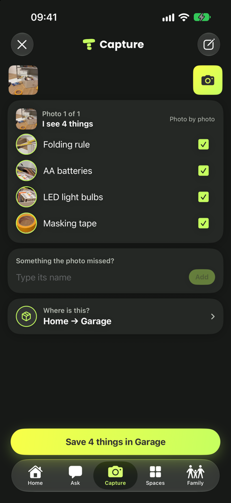
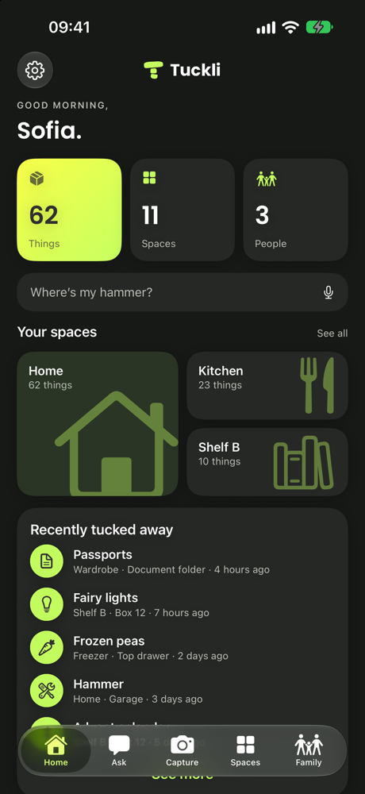
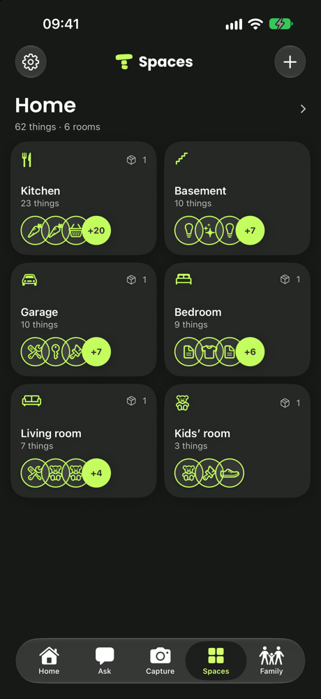
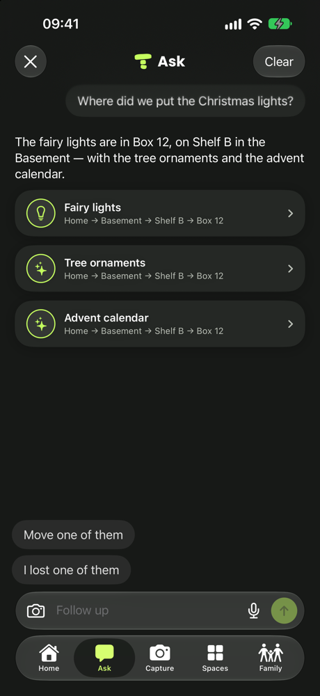
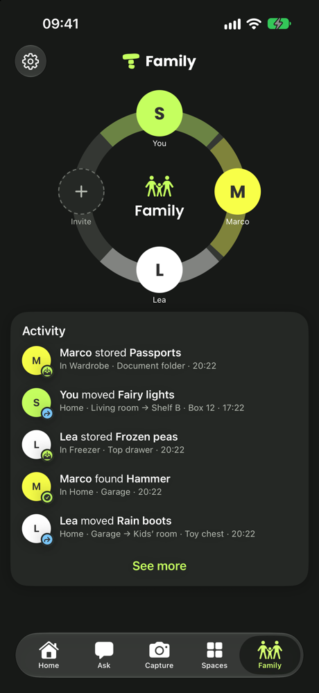

Vise. Touche. C’est noté.
Prends en photo la boîte, le tiroir, l’étagère. Tuckli nomme ce qu’il voit.
Tu confirmes, tu choisis l’endroit, c’est fait.
Photographie une fois une boîte, un tiroir ou une étagère du congélateur. Des mois plus tard, demande n’importe quoi et Tuckli te dit exactement où c’est rangé.

Range une fois, retrouve à tout moment. Fais défiler pour voir ce que fait Tuckli.

Prends en photo la boîte, le tiroir, l’étagère. Tuckli nomme ce qu’il voit.
Tu confirmes, tu choisis l’endroit, c’est fait.

Ta maison organisée comme tu la ranges : les pièces, puis le congélateur, l’étagère, la boîte à l’intérieur.

« Où est mon ordinateur ? » Tuckli répond avec l’endroit — et demande lequel quand il y en a deux.
Déplace des objets ou signale-les perdus dans la même conversation.
Combien d’objets, combien d’espaces, et ce qui a été rangé en dernier.

Chacun peut ajouter et retrouver. Vois qui a déplacé quoi, et quand.
Prends une photo. Tuckli nomme ce qu’il voit. Tu confirmes, tu choisis l’endroit, c’est fait.
« Lumières de Noël » trouve la guirlande lumineuse. Ça marche à la cave, même sans réseau.
Ce qu’il y a encore dedans, et combien.
Chacun peut ajouter et retrouver. Quelqu’un a déjà congelé du poulet ?